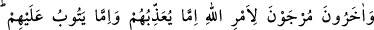

Lânetim onun üzerine olsun!”
Kulun amelini götüren yedi bin -veya üç bin- melek de: “Ey Rabbimiz, senin lanetin
ve bizim lanetimiz onun üzerine olsun!” derler. Gök halkı da: “Allah’ın laneti ve
lanet edenlerin laneti onun üzerine olsun!” derler.”[270]
Sa‘dî der ki:
Gümüşle kaplanmış bakırı,
Ancak işten anlamayanlara yutturursun
Fakat canım, mangıra altın suyu sürme,
Bilgili sarraf onu bir pula bile almaz
Bilesin ki kalemler, âlemin bütün gizlilerini ve açıklarını levhalara yazmıştır. Sonra
bu levhalar, bekçilere teslim edilmiştir. Her şey için hazineler yaratılmış, hazinelere de
koruyucular ve hiç uyumayan gözetleyiciler görevlendirilmiştir. Nitekim Allah Teâlâ:
“Hiçbir şey yoktur ki onun hazineleri bizim yanımızda olmasın.” (el-Hicr, 15/21)
buyurmuştur. Sefera (amel defterini yazan) melekleri hazene meleklerinden, hafaza
melekleri de sefera meleklerinden yazıp kopya ederler. Amellerin tamamına âid
mahzenler (muhafaza yerleri) vardır. Bütün ameller buradan taksim edilir ve yine
buraya ulaşır. Sâlih amellerin hazinelerinin nihayeti (ulaştığı en son yer) Sidretü’l-
müntehâ’dır.
Buradan anlaşılmaktadır ki hafaza melekleri, kulların işledikleri kalbî ve bedenî
amellere muttalîdirler. Fakat, amellerin makbul olanı ile makbul olmayanına muttalî
değildirler. Ancak Allah Teâlâ’ya yükselttikten ve arzettikten sonra muttalî olurlar.
Kaydedilen her amelin karşılığı verilir. Kul, amelinin gerçek niyetini insanlardan
gizlese de Allah Teâlâdan ve meleklerden gizleyemez.
Sa‘dî (k.s.) der ki:
Komşular vâkıf olmasın diyerek
Kendimi sakladımsa da az çok
Gizliye, âşikâra vâkıf olan
Âlimü’l-gayb’a karşı faydası yok
106. Başka bir takımları da var ki Allah’ın emrine bırakılmışlardır. (Allah) onlara
ya azab eder, ya da tevbelerini kabul eder. Allah en iyi bilendir, hüküm ve hikmet
sahibidir.